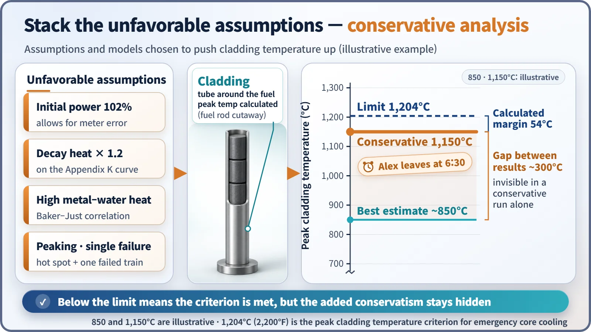
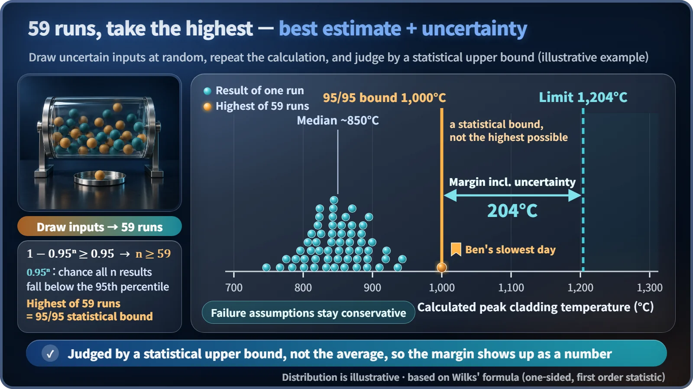

Safety Principles & Accident Analysis · 223
What Time Do You Leave for the Big Interview? — Conservative vs. Best-Estimate Safety Analysis
One planner assumes the worst at every step, the other checks 59 days of records. Both must arrive before the same deadline.
Conservative analysis sets every unknown on the side that is bad for safety; best-estimate analysis calculates realistically, then runs the calculation many times and judges by a statistical upper bound. Both must stay below the same limit, such as a peak cladding temperature of 1,204°C, but only the second shows the remaining margin as a number. [1]
Two ways to leave for the interview
You have the interview of your life at 9 a.m. Alex assumes every light is red, the traffic is the worst in history and the subway breaks down; that adds up to more than two hours, so Alex leaves at 6:30 and will almost certainly not be late, at the price of a long wait. Ben checks his record of the last 59 commutes: usually a little over 40 minutes, 55 minutes on the slowest day. He leaves at 7:50.
Both want the same thing. The only difference is how they handle what they don't know, and the same two attitudes appear in nuclear safety calculations as conservative analysis and best-estimate analysis.
The "worst day" a plant solves in advance
Before a plant is built, engineers must show by calculation that the fuel stays within limits in defined accidents. The classic case is the loss-of-coolant accident, where cooling water leaks out through a broken pipe. The key number is the peak cladding temperature: the temperature of the thin metal tube around the fuel at its hottest moment must not exceed 1,204°C. Like the 9 a.m. interview, this acceptance criterion must not be crossed. Other criteria, such as cladding oxidation, are checked too. [1]
Not every input is known exactly: the power just before the accident, the heat left after shutdown (decay heat), how well water removes heat. How that uncertainty is treated is where the two paths split.
Alex's way: stack unfavorable assumptions
Conservative analysis sets every unknown on the side that is bad for safety. The classic example is Appendix K, set by the U.S. regulator in 1974: [1]
- the reactor was running at 102% of licensed power (adding 2% power-measurement uncertainty)
- decay heat is 1.2 times the standard value
- metal–steam reaction heat comes from a formula that gives a large result
The result comes out much hotter than reality, so if it is still below 1,204°C, the real situation will be better. But the actual margin hides inside the assumptions, and because they interact, you can't split out how many degrees each one added.

Ben's way: run it 59 times, judge by the worst
Best-estimate analysis uses the models and values closest to reality, and always counts the uncertainty: each unknown gets a range, values are drawn at random and the calculation is repeated. The pair is called BEPU (best estimate plus uncertainty). How many runs? Wilks' formula answers:
1 − 0.95ⁿ ≥ 0.95 → n ≥ 59
0.95ⁿ is the chance that all n results fall below the line containing 95% of outcomes. With at least 59 runs, the highest of them is, with 95% confidence, an upper bound covering 95% of results: the 95/95 upper bound. If it is below 1,204°C, the criterion is met. The United States allowed this approach in 1988, and South Korea has also used best-estimate methods to evaluate large loss-of-coolant accidents. [2]
Now safety margin = acceptance limit − value used for the judgment is a visible number, the biggest advantage of BEPU. Reducing uncertainty can also return hidden margin: prove with a more precise flowmeter that power measurement is better than 2%, and the 102% assumption can come down accordingly.

Which side is "unfavorable"?
Making everything big is not automatically conservative, because the unfavorable direction depends on what is being judged. For cladding temperature, less emergency cooling water is the bad side; for the pressure in the containment building, more water and energy pouring out of the reactor is the bad side. And best estimate doesn't mean optimism: the IAEA safety guide keeps assumptions such as a safety system failing conservative even in BEPU. [3]
| IAEA option | Code models | Initial and boundary conditions | System availability |
|---|---|---|---|
| 1. Conservative | conservative | conservative | conservative |
| 2. Combined | best estimate | conservative | conservative |
| 3. BEPU | best estimate | realistic + uncertainty | conservative |
| 4. Realistic | best estimate | realistic + uncertainty | realistic (still under development) |
Three easy mistakes
"Conservative analysis is more accurate." No; it is deliberately tilted toward safety. "Best estimate is optimistic." No; it is judged by an upper bound with uncertainty added, not the average. "Uncertainty means a calculation mistake." No; it is a way of admitting, in numbers, how much we don't know, and managing it.
Key takeaways
Neither approach is right or wrong. Conservative analysis is simple, easy to verify and still widely used; best-estimate analysis shows how much margin there is, which can inform design improvements or operating flexibility. The 1,204°C line is the same for both. Both are deterministic analyses that assume a defined accident has occurred; how often it happens is a separate question for probabilistic assessment.